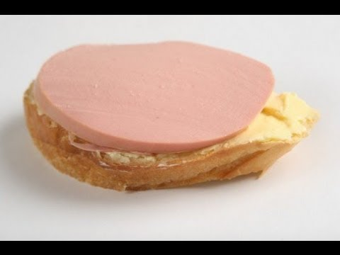

Назад
-#Кухня
Vovinchie
#-
Бутербродики
СПОСОБ ПРИГОТОВЛЕНИЯ
1. Взять хлеб и порезать.
2. Отрезать кусочек хлеба.
3. Взять колбасу.
4. Отрезать кусочек колбасы.
5. Совместить.

Приятного аппетита!
Больше информации здесь \/ \/ \/
И.Н.Ф.А